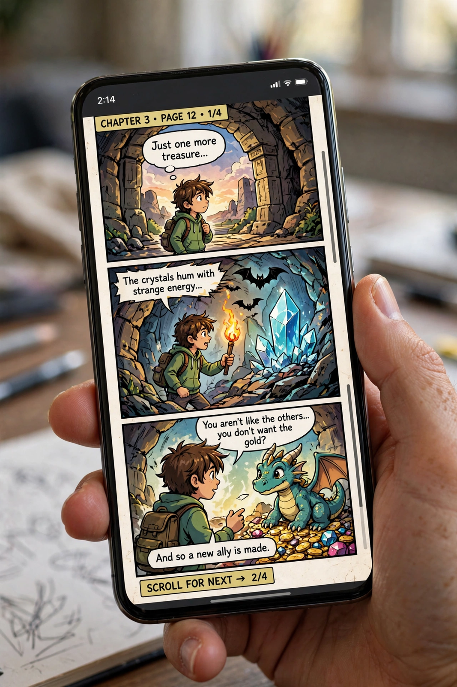

From Wikipedia, the free encyclopedia
| Webtoon | |
 | |
| Origin | South Korea, early 2000s |
|---|---|
| Format | Digital comic, vertical infinite scroll |
| Major platforms | Naver Webtoon (WEBTOON), KakaoPage, Lezhin Comics, Tapas |
A webtoon is a type of digital comic that originated in South Korea, usually meant to be read on smartphones. Webtoons are typically published as long vertical strips using an infinite-scrolling format rather than pages, are usually in full colour, and may incorporate music or simple animation. The term merges "web" and "cartoon."
The format emerged in the early 2000s on Korean portal sites such as Daum and Naver, as high-speed internet and later smartphones made vertical scrolling natural. Naver's Webtoon service (launched 2004) and its global arm LINE Webtoon (2014, rebranded WEBTOON) professionalised the industry, paying creators and serialising episodes weekly. Many webtoons began as amateur uploads on open platforms such as Naver's Challenge section or WEBTOON Canvas.
Webtoons have become a cornerstone of South Korean popular culture and a major global business, with monthly readerships in the tens of millions. Popular series such as Tower of God, The God of High School, Solo Leveling, Lore Olympus and True Beauty have been adapted into anime, Korean television dramas, films, games and novels, and major webtoons routinely cross over into the wider Korean Wave (Hallyu) entertainment economy. Business models include advertising, paid early-access "fast pass" episodes, and merchandising.
Unlike print comics and manga, which rely on page layouts and panel grids designed for turning pages, webtoon artists compose for a continuous downward flow, using long vertical gaps to control pacing and reveals. Most series update weekly, and comment sections beneath episodes are a major part of the reading culture.